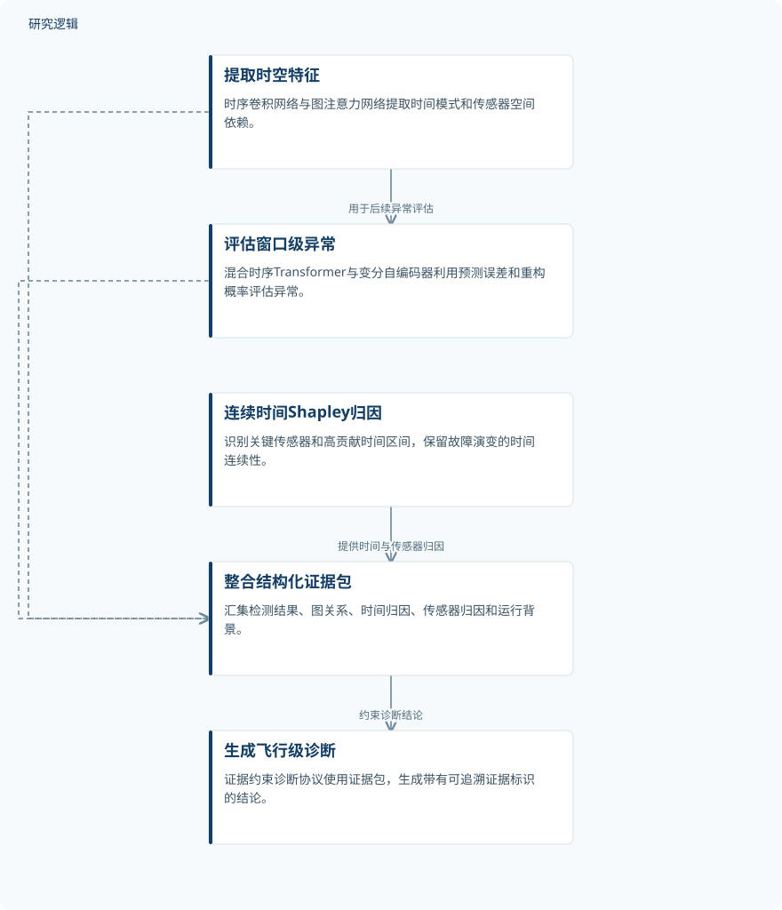

摘要解读
TGTV：融合时空图学习与大语言模型的可解释无人机故障检测与追溯框架
TGTV: An Interpretable Framework for UAV Fault Detection and Traceability via Spatiotemporal Graph Learning and Large Language Models
解读更新 2026-10-31 09:18 · 依据公开摘要整理，未核验全文细节
固定翼无人机的故障信号可能被工况切换、异步采样和控制补偿掩盖。TGTV尝试把异常检测、时序归因与大语言模型诊断连接起来，让飞行后的故障复盘不仅有结论，也有可追溯的定量依据。
文章目录
故障不只藏在单个传感器里
根据摘要，现有时序检测方法在表示跨子系统耦合故障、追踪故障演变，以及用定量证据约束语言模型诊断方面存在局限。研究关注的因此不只是“是否异常”，还包括哪些传感器、哪些时间区间支持诊断，以及这些依据如何对应飞行级结论。
从时空关联到带证据标识的诊断
TGTV首先结合时序卷积网络与采用加权融合邻接的图注意力网络，提取多尺度时间模式和传感器间的空间依赖。随后，混合时序Transformer与变分自编码器利用预测误差和重构概率，评估窗口级异常。
连续时间Shapley归因用于识别关键传感器和高贡献时间区间，同时保留故障演变的时间连续性。框架再将检测结果、图关系、时间归因、传感器归因和运行背景整合为结构化证据包，通过证据约束诊断协议生成带有可追溯证据标识的飞行级结论。
依据摘要整理的TGTV研究过程示意


仅概括摘要明确陈述的处理关系，不是论文原图，不表示未报告的实验配置。
下载 SVG图示关系说明
实线表示相邻阶段的信息流，虚线表示跨阶段联系或反馈。
提取时空特征 → 评估窗口级异常：用于后续异常评估；评估窗口级异常 → 整合结构化证据包：提供检测结果；提取时空特征 → 整合结构化证据包：提供图关系；连续时间Shapley归因 → 整合结构化证据包：提供时间与传感器归因；整合结构化证据包 → 生成飞行级诊断：约束诊断结论
窗口检测与飞行诊断分别报告结果
在公开ALFA固定翼飞行数据集的跨飞行留出实验中，窗口级精确率—召回率曲线下面积为0.976，准确率为0.973，召回率为0.902，F1分数为0.920。飞行级故障诊断的召回率为0.943，F1分数为0.944。两类结果对应不同评价层级，不宜混作同一任务的指标。
摘要将这些结果概括为准确的异常检测与有定量支持的故障追溯线索，为可解释的飞行后故障复盘和分析提供基础。这里的应用定位是飞行后分析，不能据此扩展为已经验证了实时机载诊断或维护收益。
摘要尚不足以界定验证边界
当前解读仅依据完整摘要，未据此声称阅读全文。摘要没有给出飞行架次、故障类别分布、窗口设置、具体留出划分和比较基线，因而无法判断样本覆盖范围、相对优势或结果稳定性；这些信息未在摘要报告，不等于论文没有开展相关工作。
摘要也不足以判断各模块的独立贡献、语言模型诊断的具体核验方式，以及框架对其他机型、数据集或运行条件的适用程度。可追溯证据标识提供了复核线索，但不能仅凭这一设计认定诊断已得到因果验证。
阅读启发：沿着证据链检查诊断
阅读启发：对智能运维读者，值得进一步关注的是，异常分数、关键传感器、高贡献时间区间与最终诊断之间如何逐项对应。继续阅读时，可重点查看证据包的组织方式、诊断引用证据的规则，以及错误诊断案例，以理解“可追溯”具体支持哪些复核工作，而不把流畅的文字解释直接当作可靠诊断。
以上为本站阅读启发与建议，不是论文已验证的结论。